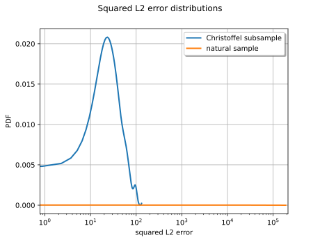

Note
Go to the end to download the full example code.
Christoffel subsampling for the Ishigami function¶
Optimal sampling draws the design points from the Christoffel distribution
associated to the approximation space instead of the reference measure.
Here the function is the Ishigami model and the reference measure is its
natural distribution, the independent uniform law on ![[-\\pi, \\pi]^3]() .
The approximation space is spanned by tensor Legendre polynomials, orthonormal
with respect to that measure, enumerated in linear (total-degree) order.
At equal budget, is the Christoffel subsample more accurate than the natural
sample? We answer by repeating both fits and comparing the distributions
of their squared
.
The approximation space is spanned by tensor Legendre polynomials, orthonormal
with respect to that measure, enumerated in linear (total-degree) order.
At equal budget, is the Christoffel subsample more accurate than the natural
sample? We answer by repeating both fits and comparing the distributions
of their squared ![L^2]() errors.
errors.
Two practical choices shape the protocol. With an inexhaustible basis the
experiment works with ![m = n]() functions, and thinning then costs
approximately
functions, and thinning then costs
approximately ![O(n^5)]() ; a budget of 200 points costs about a minute
per design. We use 30 points (a fraction of a second per design) instead,
which already separates the two methods by two orders of magnitude. Likewise
the error is measured against the best approximation in the 30-dimensional
space rather than the function itself: the truncation error is then
identical for both arms and the comparison isolates the design quality.
That projection is computed once, quasi-exactly, by weighted least squares
on a tensor Gauss rule; each repetition is then scored by the coefficient
distance to it, exact by orthonormality, instead of costly quadrature.
; a budget of 200 points costs about a minute
per design. We use 30 points (a fraction of a second per design) instead,
which already separates the two methods by two orders of magnitude. Likewise
the error is measured against the best approximation in the 30-dimensional
space rather than the function itself: the truncation error is then
identical for both arms and the comparison isolates the design quality.
That projection is computed once, quasi-exactly, by weighted least squares
on a tensor Gauss rule; each repetition is then scored by the coefficient
distance to it, exact by orthonormality, instead of costly quadrature.
import openturns as ot
import openturns.experimental as otexp
import openturns.viewer as otv
from openturns.usecases import ishigami_function
ot.RandomGenerator.SetSeed(0)
We load the Ishigami model and build the tensor Legendre basis orthonormal with respect to its natural distribution. The experiment deduces the space dimension from the budget: with this inexhaustible basis it is the budget itself. The reference projection is the weighted least squares fit on a tensor Gauss rule, quasi-exact for this smooth model: rules of 16 and 20 points per direction agree on the 60 coefficients to 1e-12.
im = ishigami_function.IshigamiModel()
measure = im.distribution
model = im.model
enumerateFunction = ot.LinearEnumerateFunction(measure.getDimension())
basis = ot.OrthogonalBasis(
ot.OrthogonalProductPolynomialFactory(
[measure.getMarginal(i) for i in range(measure.getDimension())],
enumerateFunction,
)
)
budget = 30
experiment = otexp.ChristoffelSubsampleExperiment(basis, budget)
expansionSize = experiment.getSpaceDimension()
def computeProjection(level):
nodes, weights = ot.GaussProductExperiment(measure, [level] * 3).generateWithWeights()
projection = ot.LeastSquaresExpansion(
nodes, ot.Point(weights), model(nodes), measure, basis, expansionSize
)
projection.run()
return projection.getResult().getCoefficients()
coarse = computeProjection(16)
fine = computeProjection(20)
assert max(abs(x) for x in coarse.asPoint() - fine.asPoint()) < 1e-12
reference = coarse
Each repetition fits the same truncated space twice: once on a Christoffel
subsample with its density-ratio weights, once on a natural sample with
uniform weights. Both fits use LeastSquaresExpansion
on the first expansionSize basis functions, and each is scored by its
squared coefficient distance to the reference projection, which is the
squared distance by orthonormality. At the
thinned design systematically misses the default frame band, so the loop
runs with warnings silenced; the error distributions below show the design
still wins by far.
repetitions = 60
christoffelErrors = ot.Sample(repetitions, 1)
naturalErrors = ot.Sample(repetitions, 1)
def coefficientError(expansion):
gap = expansion.getResult().getCoefficients() - reference
return gap.computeRawMoment(2)[0] * gap.getSize()
ot.Log.Show(ot.Log.ERROR)
for repetition in range(repetitions):
sample, weights = experiment.generateWithWeights()
observations = model(sample)
expansion = ot.LeastSquaresExpansion(
sample, ot.Point(weights), observations, measure, basis, expansionSize
)
expansion.run()
christoffelErrors[repetition, 0] = coefficientError(expansion)
naturalSample = measure.getSample(budget)
naturalObservations = model(naturalSample)
naturalExpansion = ot.LeastSquaresExpansion(
naturalSample, naturalObservations, measure, basis, expansionSize
)
naturalExpansion.run()
naturalErrors[repetition, 0] = coefficientError(naturalExpansion)
print(f"median Christoffel error={christoffelErrors.computeQuantile(0.5)[0]:.3e}")
print(f"median natural error={naturalErrors.computeQuantile(0.5)[0]:.3e}")
ot.Log.Show(ot.Log.DEFAULT)
median Christoffel error=3.215e+01
median natural error=1.249e+04
Squared errors live on ![[0, +\\infty)]() , so each density is estimated
with a
, so each density is estimated
with a KernelSmoothing truncated at the lower bound 0.
The two densities are drawn on the same log-scale figure: the Christoffel
errors concentrate two orders of magnitude below the natural ones.
christoffelSmoothing = ot.KernelSmoothing()
christoffelSmoothing.setBoundingOption(ot.KernelSmoothing.LOWER)
christoffelSmoothing.setLowerBound(0.0)
christoffelDensity = christoffelSmoothing.build(christoffelErrors)
naturalSmoothing = ot.KernelSmoothing()
naturalSmoothing.setBoundingOption(ot.KernelSmoothing.LOWER)
naturalSmoothing.setLowerBound(0.0)
naturalDensity = naturalSmoothing.build(naturalErrors)
graph = christoffelDensity.drawPDF()
graph.add(naturalDensity.drawPDF().getDrawable(0))
graph.setLegends(["Christoffel subsample", "natural sample"])
graph.setTitle("Squared L2 error distributions")
graph.setXTitle("squared L2 error")
graph.setLogScale(ot.GraphImplementation.LOGX)
view = otv.View(graph)

Display all figures